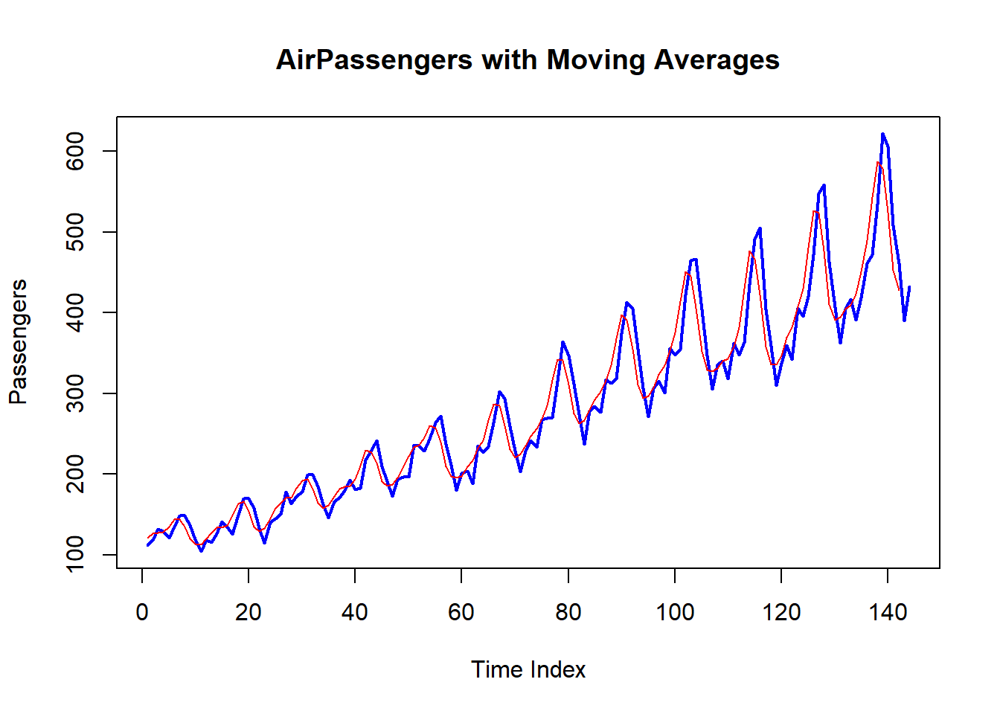

3.2 Structuring and constructing modules part 2: Package-like Modules
The previous part teaches you on how to import / export data from module, and in this part, you’ll learn on how to create a module that mimics the package system in R and package system in other languages such as Python. One of the strengths of {box} is that you don’t need to create an R package just to store the R codes and make it accessible to other end-users. Because of this package, you can mimic the way on how Python packages are created. It’s modular, maintainable, and accessible.
3.2.1 Create modules from the root folder
Recall the not_func.r script. Keep it and this time, create another scripts named convert.r and hello_world.r.
Did you know?
Recall that #' @export is only necessary when you are exporting specific part of the assigned R code into the namespace. When #' @export is placed, it triggers the Roxygen2 functionality, where it keeps the public namespace into the private namespace.
Under the {./module}, let’s create a subfolder named statistics, where the small set of statistical functions are contained in separate scripts. Don’t forget the __init__.r initialization file.
mas = md_sts$time_series$moving_average(AirPassengers, win =3)plot(seq_along(AirPassengers), AirPassengers, type ="l",col ="blue", lwd =2, xlab ="Time Index", ylab ="Passengers", main ="AirPassengers with Moving Averages")lines(mas, col ="red")

The {statistics}submodule is accessible:
box::use( ./module/statistics)
If __init__.r file under {statistics} subfolder is initialized through: